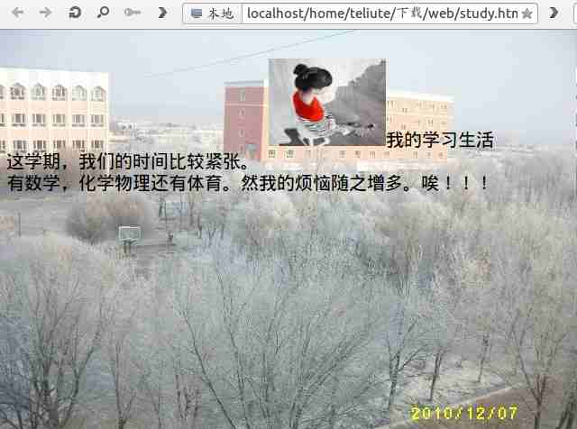

2011-2012 第二学期九年级系统安装教学设计
作者：TeliuTe 来源：基础教程网
十二、学会使用图片 返回目录 下一课
（一）教学设计
1、学习目标：学会使用图片
2、注意事项：图片存放到网页文件夹里
3、教学过程：
1）教师准备学案和板书；
2）学生整队进入，开机抄黑板上笔记；
3）教师讲解板书演示操作；
4）学生打指法、日志、完成操作；
5）教师打勾记录学生指法成绩，检查日志和操作；
注：学生抄完笔记就开始打指法、日志，老师讲完后再继续完成；
（二）板书设计(学生笔记)
第12课 学会使用图片
1、到相册下载一大一小两幅图片(web)
2、打开kz，点“格式、页面属性”、保存study
3、写上一段关于自己学习的(语文、数学、英语...上课、自习、课间、课后、感受、体会、想法...)
4、点“格式、背景和颜色、浏览、大图”
点“插入、图片、浏览、小图”
操作图示：

（三）课后记
上午上了两个班，效果一般化
选图还有些问题，容易选小了
--
好在练习，都知道操作是怎么回事
日志越写越少，这个只能作为附加了
--
内容没多难，只是操作太复杂
而且前后之间关联很多，前面错了后面就不好找
--
文件夹有些乱，当初的9-1里又建了一个，有些太罗嗦
保存的时候分不清打开还是点保存，容易把扩展名给删除了
--
好在基本上都做出来效果，看着自己的网页感觉还可以
没顾着仔细的，只是大致看一下后面的上传还是问题
--
把下节课的表格布置一下，写一下生活的
跟同学、老师、父母等等的作一个网页
返回目录 下一课
本教程由86团学校TeliuTe制作|著作权所有
基础教程网：http://teliute.org/
美丽的校园……
转载和引用本站内容，请保留作者和本站链接。